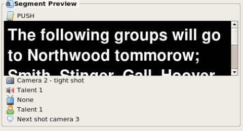

The Segment Preview is a useful tool for
seeing what a segment looks like in the teleprompter's background and foreground colors. Included in the
Segment Preview is the title, text and all cues. This feature works for
any segment, whether it is in the Script Editor or Segment Clip.